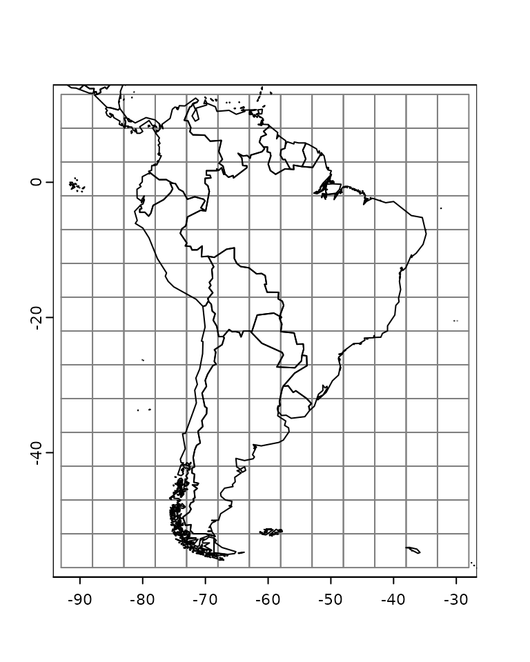

A guide to transform species distributions into a presence absence matrix based on a user-defined grid in R
Source:vignettes/A-guide-to-transform-species-distributions-into-a-presence-absence-matrix-based.Rmd
A-guide-to-transform-species-distributions-into-a-presence-absence-matrix-based.RmdSpecies distributions are readily available in online databases, such
as the distribution ranges provided by IUCN or occurrence records found
in GBIF. However, analyzing this type of data often requires
transforming the spatial distribution of species into a presence-absence
matrix or a grid format. In this tutorial, we will guide you through a
straightforward process using the R package letsR,
authored by Bruno Vilela and Fabricio Villalobos.
IUCN shapefiles
To begin, download the species distribution shapefiles from the IUCN
website.
You can import this data using the terra::vect or
sf::st_read functions. For the purpose of this tutorial, I
will be utilizing the distribution data for frogs belonging to the
Phyllomedusa genus, which is conveniently pre-loaded within the
letsR package.
We can plot the data to see how it looks like.
# Plot
## Color settings and assignment
colors <- rainbow(length(unique(Phyllomedusa$binomial)),
alpha = 0.5)
position <- match(Phyllomedusa$binomial,
unique(Phyllomedusa$binomial))
colors <- colors[position]
## Plot call
plot(sf::st_geometry(Phyllomedusa), col = colors, lty = 0,
main = "Spatial polygons of Phyllomedusa")
data("wrld_simpl")
plot(sf::st_geometry(wrld_simpl), add = TRUE)
Quick start
Next step, we can use the function lets.presab to
convert species’ ranges (in shapefile format) into a presence-absence
matrix based on a user-defined grid system. A simple way to do this is
to define the extent and resolution of the grid.
PAM <- lets.presab(Phyllomedusa, xmn = -93, xmx = -29,
ymn = -57, ymx = 15, res = 1)Please be aware that when working with shapefiles containing numerous
species or opting for a high-resolution grid, the function’s execution
may become notably slow. In such instances, it is advisable to monitor
the relative running time of the analysis by enabling the
count = TRUE argument.
The lets.presab function yields a
PresenceAbsence object (unless
show.matrix = TRUE, in which case only a presence-absence
matrix is returned). This object is essentially a list comprising a
presence-absence matrix, a raster containing geographical information,
and the species names. For additional details, refer to
?PresenceAbsence. To obtain summary information about the
generated Presence-Absence Matrix (PAM), the summary
function can be employed.
summary(PAM)##
## Class: PresenceAbsence
## _ _
## Number of species: 32
## Number of cells: 1187
## Cells with presence: 1187
## Cells without presence: 0
## Species without presence: 0
## Species with the largest range: Phyllomedusa hypochondrialis
## _ _
## Grid parameters
## Resolution: 1, 1 (x, y)
## Extention: -93, -29, -57, 15 (xmin, xmax, ymin, ymax)
## Coord. Ref.: +proj=longlat +datum=WGS84 +no_defsYou can also use the plot function directly to the PAM
object.
plot(PAM)
The plot function also allow users to plot specific
species distributions. For example, we can plot the map of
Phyllomedusa hypochondrialis:
plot(PAM, name = "Phyllomedusa hypochondrialis")
As said before, the PAM object contains the actual presence absence matrix, to access it we can use the following code:
presab <- PAM$Presence_and_Absence_MatrixThe first two columns of the matrix contain the longitude (x) and latitude (y) of the cells’ centroid, the following columns include the species’ presence(1) and absence(0) information.
# Print only the first 5 rows and 3 columns
presab[1:5, 1:3]## Longitude(x) Latitude(y) Phyllomedusa araguari
## [1,] -74.5 11.5 0
## [2,] -69.5 11.5 0
## [3,] -68.5 11.5 0
## [4,] -75.5 10.5 0
## [5,] -74.5 10.5 0Using different projections
Some users may want to use different projections to generate the
presence absence matrix. The lets.presab function allow
users to do it by changing the crs.grid argument. Check the
example using the South America Equidistant Conic projection.
pro <- paste("+proj=eqdc +lat_0=-32 +lon_0=-60 +lat_1=-5",
"+lat_2=-42 +x_0=0 +y_0=0 +ellps=aust_SA",
"+units=m +no_defs")
SA_EC <- terra::crs(pro)
PAM_proj <- lets.presab(Phyllomedusa, xmn = -4135157,
xmx = 4707602,
ymn = -450000, ymx = 5774733,
res = 100000,
crs.grid = SA_EC)
summary(PAM_proj)##
## Class: PresenceAbsence
## _ _
## Number of species: 32
## Number of cells: 1396
## Cells with presence: 1396
## Cells without presence: 0
## Species without presence: 0
## Species with the largest range: Phyllomedusa hypochondrialis
## _ _
## Grid parameters
## Resolution: 1e+05, 1e+05 (x, y)
## Extention: -4135157, 4664843, -450000, 5750000 (xmin, xmax, ymin, ymax)
## Coord. Ref.: +proj=eqdc +lat_0=-32 +lon_0=-60 +lat_1=-5 +lat_2=-42 +x_0=0 +y_0=0 +ellps=aust_SA +units=m +no_defs
plot(PAM_proj)
# Add projected country boundaries
data("wrld_simpl")
plot(sf::st_transform(sf::st_geometry(wrld_simpl), pro), add = TRUE)
Other features
The function lets.presab has some other useful
arguments. For instance, users may wish to exclude regions where species
are extinct or retain only the breeding ranges. The
presence, origin, and seasonal
arguments enable users to filter species distributions based on the IUCN
classification of different parts of a species’ range. To find the
specific values for these arguments, consult the IUCN
metadata files.
In certain scenarios, it proves advantageous to consider a species
present in a cell only if it covers more than a specified percentage
value. Users can customize this threshold using the cover
argument. It’s important to note that initially, this option is
exclusively available when the coordinates are in degrees
(longitude/latitude). However, with the latest update on GitHub, users can now
employ the cover argument with other projections as
well.
# 90% cover
PAM_90 <- lets.presab(Phyllomedusa, xmn = -93,
xmx = -29, ymn = -57,
ymx = 15, res = 1,
cover = 0.9)
plot(PAM_90)Observing the plot above, it’s evident that cells near the continent’s border no longer reflect the presence of the species.
When generating multiple PresenceAbsence objects for
distinct groups, users might prefer to maintain a consistent grid. To
achieve this, it’s crucial to retain the
remove.cells = FALSE argument, preventing any modification
to the grid. Conversely, setting remove.cells = TRUE
excludes cells with a value of zero in the final matrix, meaning sites
where no species are present won’t be included.
PAM_keep_cells <- lets.presab(Phyllomedusa, xmn = -93,
xmx = -29, ymn = -57,
ymx = 15, res = 1,
remove.cells = FALSE)You can now employ the summary function to confirm
whether the empty cells were retained.
summary(PAM_keep_cells)##
## Class: PresenceAbsence
## _ _
## Number of species: 32
## Number of cells: 4608
## Cells with presence: 1187
## Cells without presence: 3421
## Species without presence: 0
## Species with the largest range: Phyllomedusa hypochondrialis
## _ _
## Grid parameters
## Resolution: 1, 1 (x, y)
## Extention: -93, -29, -57, 15 (xmin, xmax, ymin, ymax)
## Coord. Ref.: +proj=longlat +datum=WGS84 +no_defsAdditionally, for users intending to retain species that do not occur
in any cell of the grid, it is essential to configure
remove.sp = FALSE.
Occurrence data (e.g. GBIF)
Another prevalent source of spatial data is occurrence records. The
lets.presab.points function enables users to input these
records, generating a PresenceAbsence object. To utilize
this function, you’ll need a two-column matrix containing longitude and
latitude, along with a vector indicating the species name for each
occurrence record. In the example below, we are going to simulate random
occurrence points.
species <- c(rep("sp1", 100), rep("sp2", 100),
rep("sp3", 100), rep("sp4", 100))
x <- runif(400, min = -69, max = -51)
y <- runif(400, min = -23, max = -4)
xy <- cbind(x, y)Now that we have the coordinates and species name, we can use the
lets.presab.points function.
PAM_points <- lets.presab.points(xy, species, xmn = -93, xmx = -29,
ymn = -57, ymx = 15)
plot(PAM_points)Using your own grid
For different reasons some users may want to create a presence
absence matrix based on their own grid in shapefile format. The function
lets.presab.grid allow users to convert species’ ranges
into a presence-absence matrix based on a grid in shapefile format.
However, this function only returns the actual matrix of presence
absence and the grid, not an PresenceAbsence object. In
some situations it is possible to convert this result to a
PresenceAbsence object, I will cover this in a new post
soon. Let’s first create our grid:
# Grid
sp.r <- terra::as.polygons(terra::rast(xmin = -93, xmax = -29,
ymin = -57, ymax = 15,
resolution = 5))
# Give an ID to the cell
sp.r$ID <- 1:length(sp.r)
plot(sp.r, border = rgb(.5, .5, .5))
plot(sf::st_geometry(wrld_simpl[1]), add = T, fill = F)
Now we can build our presence absence matrix from the grid.
resu <- lets.presab.grid(Phyllomedusa, sp.r, "ID")The result is a list with the presence absence matrix and the grid. To plot the richness map we can use the following code:
rich_plus1 <- rowSums(resu$PAM[, -1]) + 1
colfunc <- colorRampPalette(c("#fff5f0", "#fb6a4a", "#67000d"))
colors <- c("white", colfunc(max(rich_plus1)))
plot(resu$grid, border = "gray40",
col = colors[rich_plus1])
plot(sf::st_geometry(wrld_simpl), add = TRUE)
This covers all the functions to convert species distribution into
presence absence matrix using the letsR package. Let me
know if you have any suggestion or comments, and please share if you
like it.
To cite letsR in publications use: Bruno Vilela and Fabricio Villalobos (2015). letsR: a new R package for data handling and analysis in macroecology. Methods in Ecology and Evolution. DOI: 10.1111/2041-210X.12401